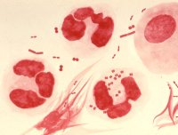
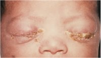

You are here: Urology Textbook > Penis > Sexually transmitted diseases > Gonorrhea > Pathogen and symptoms
Gonorrhea: Pathogen and Symptoms of the gonococcal Urethritis (1/2)
- Gonorrhea (1/2): Etiology, Signs and Symptoms
- Gonorrhea (2/2): Diagnosis and Treatment
Review-Literature: (CDC Guidelines, 2012) (IUSTI Guidelines, 2012) (Moran, 2003) (Schneede et al, 2003).
Definition of Gonorrhea
Gonorrheal urethritis (GU) with purulent urethral discharge is a venereal disease caused by Neisseria gonorrhoeae. The word Gonorrhea is derived from an old greek word meaning ‘flow of seed [semen]’.
Epidemiology of Gonorrhea
USA 114/100 000 new cases (in 2004), much lower figures in Europe, Germany 21/100 000 (in 2017).
Etiology of Gonorrhea
Bacterial pathogen:
gram-negative diplococcus Neisseria gonorrhoeae. Strictly aerobic. Unencapsulated.
Morphology of Gonococcus:
gram-negative diplococci with a diameter of about 1 micron (coffee bean-shaped). Frequently intracellular in granulocytes [fig. gonorrhea (microscopy)].
|  | fig. gonorrhea: schematic drawing of the microscopic finding of urethral discharge. Neisseria gonorrhoeae are gram-negative diplococci (coffee bean-shaped), often intracellular in granulocytes. Figure from Dr. Norman Jacobs, Public Health Image Library, Center for Disease Control and Prevention, USA, www.cdc.gov. |
Virulence factors:
there are pili for the attachment to human epithelial cells and secretion of proteins as virulence factors: porins, IgA-ase, penicillinase. The contact of gonococci leads to endocytosis and basal exocytosis. This results in an infection of the lamina propria.
Transmission of gonorrhea:
mucus membrane infection due to vaginal, oral or anal sexual contact. The risk of infection per intercourse for men is around 17%. Rare transmission occurs through birth or as aerosol infection (conjunctivitis). Humans are the only reservoir for Neisseria gonorrhoeae.
Gonorrhea: Signs and Symptoms
Urethritis:
the incubation period is 3–10 days with a large variance depending on the bacterial strain. Typical symptoms are purulent discharge from the urethra, dysuria, pain in the urethra, inguinal lymphadenopathy. The extent of the symptoms is variable, normally women experience less symptoms than men.
Extragenital Infections:
Proctitis or pharyngitis cause only minor or no symptoms, these are relevant bacterial reservoirs. Conjunctivitis (ophthalmia neonatorum), particularly in neonates [fig. neonatal conjunctivitis]. Seldom arthritis or gonococcal sepsis.
|  |
fig. gonococcal neonatal conjunctivitis: purulent conjunctivitis of the newborn. Figure from the image collection of the Public Health Image Library, Center for Disease Control and Prevention, USA, www.cdc.gov. |
Complications of Gonorrhea
Complications in men:
Acute prostatitis, epididymitis, urethral strictures, infertility.
Complications in women:
Bartholinitis, cervical endometritis, pelvic inflammatory disease, infertility.
Fitz-Hugh-Curtis syndrome:
ascending pelvic inflammatory disease with peritoneal infection. Often right-sided abdominal pain due to infection of the hepatic peritoneum (perihepatitis).
Reiter syndrome:
due to a mixed infection with Chlamydia, the Reiter syndrome can also be possible in gonorrhea. See also chapter non-gonococcal urethritis.
| STD | Index | Gonorrhea Treatment |
-->
Index: 1–9 A B C D E F G H I J K L M N O P Q R S T U V W X Y Z
References
- Center for Disease Control & Prevention
- Update to CDC's Sexually transmitted diseases treatment guidelines, 2010: oral
cephalosporins no longer a recommended treatment for gonococcal infections.
MMWR Morb Mortal Wkly Rep, 2012, 61, 590-594. - Chris Bignell and Magnus Unemo
- European Guideline on the Diagnosis and Treatment of Gonorrhoea in Adults (2012). http://www.iusti.org/regions/Europe/euroguidelines.htm
- Moran 2003 MORAN, J.:
- Gonorrhea.
In: Clin Evid
(2003), Nr. 10, S. 1854–62
- Schneede u.a. 2003 SCHNEEDE, P. ; TENKE, P. ; HOFSTETTER, A. G.:
- Sexually transmitted diseases (STDs)-a synoptic overview for
urologists.
In: Eur Urol
44 (2003), Nr. 1, S. 1–7
 Deutsche Version: Gonorrhoe: Erreger und Klinik gonorrhoischen Urethritis.
Deutsche Version: Gonorrhoe: Erreger und Klinik gonorrhoischen Urethritis.